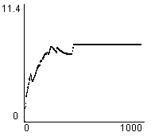
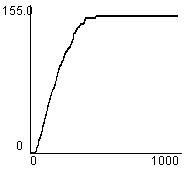
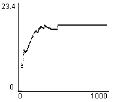
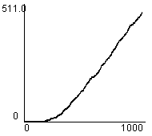
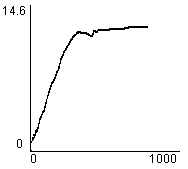
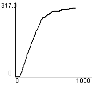
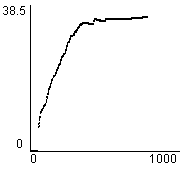
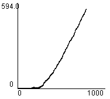

1. Editor
2. Simulator
3. Evaluation Tools
4. An Example Session
5. Algorithms
 a. Driving policies
a. Driving policies
 b. Traffic light controllers
b. Traffic light controllers
 1) Random
1) Random
 2) Most Cars
2) Most Cars
 3) RLD
3) RLD
 4) Hillclimbing
4) Hillclimbing
 5) Longest Queue
5) Longest Queue
 6) Relative LQ
6) Relative LQ
 7) Best first
7) Best first
 8) TC-1
8) TC-1
 9) TC-2
9) TC-2
 10) TC-3
10) TC-3
 11) TC-1++
11) TC-1++
 12) TC-2++
12) TC-2++
 13) TC-3++
13) TC-3++
 14) ACGJ-1
14) ACGJ-1
 15) ACGJ-2
15) ACGJ-2
 16) ACGJ-3
16) ACGJ-3
 17) GenNeural
17) GenNeural
TC-2
TC-2 is a reinforcement learning algorithm which will try to find an optimal policy for the traffic lights in the manner of TC-1. But now the number of road users at the next traffic light is communicated. This number is encoded in the transition chance and is used for the Q(green) calculation.
| (Map: Simple) Average Junction Waiting Time |  |
| (Map: Simple) Total Road Users Arrived |  |
| (Map: Simple) Average Trip Waiting Time |  |
| (Map: Simple) Total Waiting Queue Length |  |
| (Map: Complex) Average Junction Waiting Time |  |
| (Map: Complex) Total Road Users Arrived |  |
| (Map: Complex) Average Trip Waiting Time |  |
| (Map: Complex) Total Waiting Queue Length |  |
Thanks to Marco Wiering, Utrecht University.